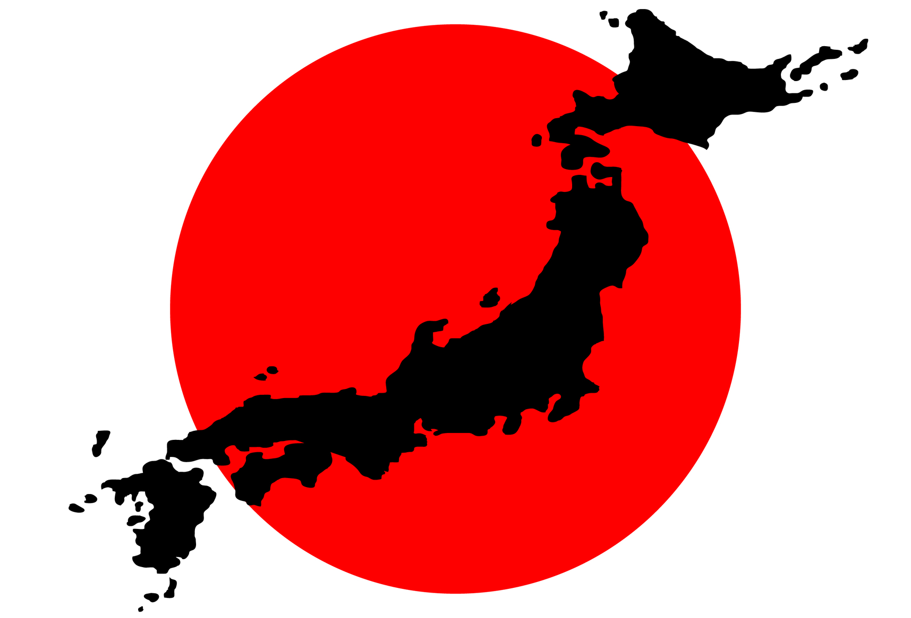

História
A história do Japão é rica e complexa, marcada por períodos de isolamento e transformação. Os primeiros habitantes chegaram há cerca de 30 mil anos, mas o Japão começou a desenvolver uma cultura unificada no período Yayoi (300 a.C. - 300 d.C.), quando se consolidou a agricultura e o uso do ferro. No século VIII, a capital foi estabelecida em Nara, e o budismo tornou-se influente. Durante a era feudal, o Japão foi governado por samurais e shoguns, com clãs rivais lutando pelo poder. Esse sistema foi fortalecido no Período Edo (1603-1868), quando o shogunato Tokugawa isolou o país do resto do mundo. No entanto, em 1853, o Japão foi forçado a abrir seus portos para o Ocidente, o que levou à Restauração Meiji (1868), marcando o fim do feudalismo e o início da modernização do Japão como uma potência industrial. No século XX, o Japão expandiu seu império e participou de conflitos que culminaram na Segunda Guerra Mundial. Após a derrota em 1945, o país adotou uma nova constituição pacifista e, com o apoio dos Estados Unidos, reconstruiu sua economia, transformando-se em uma potência econômica global. Hoje, o Japão é conhecido por sua tecnologia avançada, cultura influente e economia robusta, mantendo tradições antigas ao lado de uma sociedade moderna.
